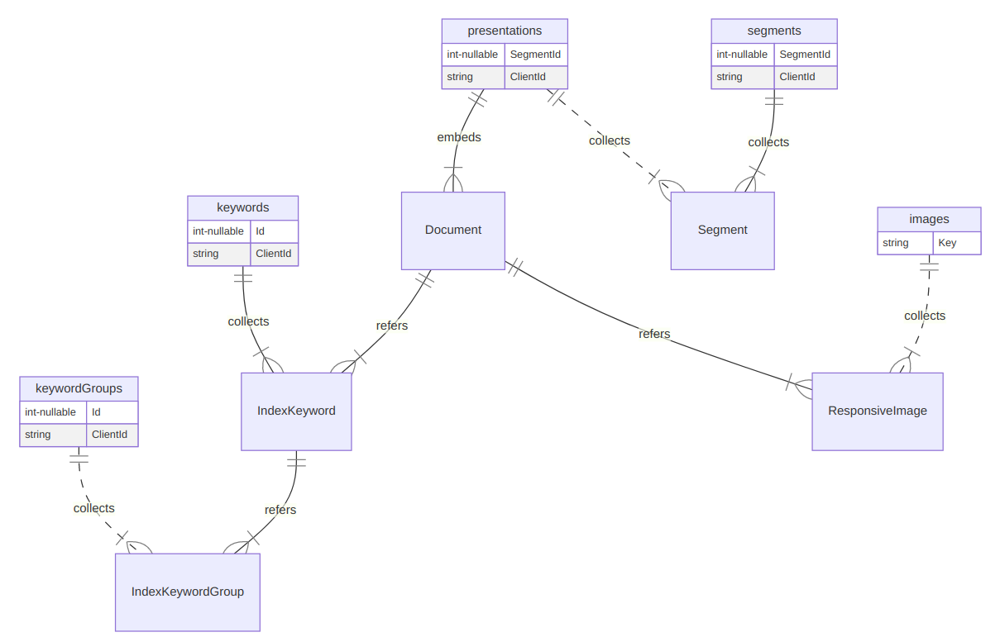

studio status report: 2021-05
month 05 of 2021 was about getting the b-roll player and LiteDB working in the Studio
The latest addition to b-roll player technology is a NuGet package called Polly [GitHub] which allows the b-roll player to define formal retry policies with respect to calling 3rd-party REST APIs (like the quite unreliable YouTube Data API).
A Polly policy can be defined like this:
var retryCount = 10;
retryPolicy = Policy
.Handle<HttpRequestException>()
.Or<TaskCanceledException>()
.Or<TimeoutException>()
.WaitAndRetryAsync(
retryCount,
retryAttempt => TimeSpan.FromSeconds(3),
(exception, timeSpan, context) =>
{
traceSource?.TraceError(exception);
traceSource?.TraceInformation($"Retrying in {timeSpan.Seconds}
seconds (attempt {context.Count} of {retryCount})...");
}
);
(where context.Count is not what I think it is) and this policy can wrap a service call like this:
internal static async Task<JObject> GetPlaylistItemsByIdAsync(this
RestApiMetadata restApiMetadata, string playlistId, AsyncPolicy retryPolicy)
{
traceSource?.TraceVerbose($"{nameof(GetPlaylistItemsByIdAsync)}:");
traceSource?.WriteLine($"Getting playlist items with {nameof(playlistId)} `
{playlistId}`...");
if (restApiMetadata == null) throw new ArgumentNullException(nameof
(restApiMetadata));
if (retryPolicy == null) throw new ArgumentNullException(nameof(retryPolicy));
var uri = restApiMetadata.ToUriForYouTubePlaylistItems(playlistId);
string responseString = await retryPolicy
.ExecuteAsync(async () =>
{
return await new HttpRequestMessage(HttpMethod.Get, uri)
.GetContentAsync()
.ConfigureAwait(continueOnCapturedContext: false);
})
.ConfigureAwait(continueOnCapturedContext: false);
var jObject = JObject.Parse(responseString);
return jObject;
}
I suffered for years without even thinking of needing something like this! Thanks goes out to Nick Chapsas, his video, “How to add clean Retrying in .NET Core using Polly,” changed my life! In fact, his YouTube channel is far ahead of the usual .NET YouTube channels and podcasts, many of them curated by the b-roll player.
b-roll player .NET binaries need PowerShell
I run the routines for YouTube channel curation on my desktop using Visual Studio Code which opens a folder mirroring the JSON files used in production Azure Storage. I am treating these hundreds of JSON files like a data source and the PowerShell scripts are therefore the stored procedures of this primitive database.
Here is an example:
$settingsPath = $args[0]
if (-not(Test-Path $settingsPath)) {
Write-Warning "Cannot find path $settingsPath. Exiting script."
exit
}
Set-Location $PSScriptRoot
$appRoot = "$($env:HOME)/appRoot/songhay/player/"
$jsonRoot = Resolve-Path -Path "../json"
$settings = Get-Content -Path $settingsPath | ConvertFrom-Json
$azStorageCnn = $settings.ProgramMetadata.CloudStorageSet.SonghayCloudStorage.classic
Write-Output "Looking for channel files..."
$channelFiles = Get-ChildItem -Path $jsonRoot -Filter "youtube-channels-*.json"
$channelFiles | ForEach-Object {
$channels = Get-Content -Path $_.FullName | ConvertFrom-Json
$channels | ForEach-Object {
$fileName = $_.name
"downloading youtube-channels/$fileName..."
&az storage blob download-batch `
--connection-string $azStorageCnn `
--destination $jsonRoot `
--pattern "youtube-channels/$fileName" `
--source "player-video"
$channelFile = "$jsonRoot/youtube-channels/$fileName"
$uploadsFile = "$jsonRoot/youtube-uploads/$fileName"
Push-Location -Path $appRoot
&dotnet `
Songhay.Player.Shell.dll `
YouTubePlaylistItemsActivity `
--json-file $channelFile `
--output-file $uploadsFile
if ($LASTEXITCODE -ne 0) {
exit $LASTEXITCODE
}
Start-Sleep -Milliseconds 500
if (Test-Path $uploadsFile) {
&az storage blob upload `
--container-name player-video `
--connection-string $azStorageCnn `
--file $uploadsFile `
--name "youtube-uploads/$fileName"
Remove-Item -Path $uploadsFile -Verbose
}
Pop-Location
Remove-Item -Path $channelFile -Verbose
}
Remove-Item -Path $_.FullName -Verbose
if ($channelFiles[-1].FullName -ne $_.FullName) {
Write-Output "Sleeping for 73 seconds to provide Google with a tax haven..."
Start-Sleep -Seconds 73
}
}
Write-Output "Updating indices..."
$filter = "youtube-index-*.json"
&az storage blob download-batch `
--connection-string $azStorageCnn `
--destination $jsonRoot `
--pattern $filter `
--source "player-video"
$indexFiles = Get-ChildItem -Path $jsonRoot -Filter $filter
$indexFiles | ForEach-Object {
Push-Location -Path $appRoot
$indexOutputFile = $_.FullName.Replace(".json", "-output.json")
&dotnet `
Songhay.Player.Shell.dll `
YouTubeIndexActivity `
--update-yt-index `
--json-file $_.FullName `
--output-file $indexOutputFile
if ($LASTEXITCODE -ne 0) {
exit $LASTEXITCODE
}
Start-Sleep -Milliseconds 500
Pop-Location
Remove-Item -Path $_.FullName -Verbose
Rename-Item -Path $indexOutputFile -NewName $_.FullName -Verbose
&az storage blob upload-batch `
--connection-string $azStorageCnn `
--destination "player-video" `
--pattern "$([System.IO.Path]::GetFileName($_.FullName))" `
--source "$jsonRoot"
Remove-Item -Path $_.FullName -Verbose
}
$filter = "youtube-topten.json"
&az storage blob download-batch `
--connection-string $azStorageCnn `
--destination $jsonRoot `
--pattern $filter `
--source "player-video"
$indexFiles = Get-ChildItem -Path $jsonRoot -Filter $filter
$indexFiles | ForEach-Object {
$topTenIndex = Get-Content -Path $_.FullName | ConvertFrom-Json
Push-Location -Path $appRoot
$topTenIndex.PSObject.Properties | ForEach-Object {
$propertyName = $_.Name
$list = [string]::Join(",", $topTenIndex."$propertyName")
$indexOutputFile = "$jsonRoot/youtube-uploads/youtube-index-$propertyName-top-ten.json"
&dotnet `
Songhay.Player.Shell.dll `
YouTubeIndexActivity `
--update-yt-topten-index `
--list $list `
--output-file $indexOutputFile
if ($LASTEXITCODE -ne 0) {
exit $LASTEXITCODE
}
Start-Sleep -Milliseconds 500
&az storage blob upload-batch `
--connection-string $azStorageCnn `
--destination "player-video/youtube-uploads" `
--pattern "youtube-index-$propertyName-top-ten.json" `
--source "$jsonRoot/youtube-uploads"
Remove-Item -Path $indexOutputFile -Verbose
}
Pop-Location
Remove-Item -Path $_.FullName -Verbose
}
This script feels too large for my comfort but note that:
$settings = Get-Content -Path $settingsPath | ConvertFrom-Json
$azStorageCnn = $settings.ProgramMetadata.CloudStorageSet.SonghayCloudStorage.classic
represents my discovery that my primitive secrets file can be called from a script.
- My use of the Azure CLI (
az) from PowerShell might look brilliant but the right thing to do is to use the Az PowerShell module. - Using
Push-Location -Path $appRoothelps .NET not throw errors while looking for configuration files likeappsettings.json. - Using
if ($LASTEXITCODE -ne 0) { exit $LASTEXITCODE }is basically saying there is zero-tolerance for unhandled exceptions in this entire script which would be crazy without Polly (but sometimes you have to be ‘crazy’ in order to setup a Polly policy correctly). $topTenIndex.PSObject.Properties | ForEach-Objectmakes looping through a hunk of JSON shaped like a .NET Dictionary possible without having to hard-code keys.
This script can run on my local desktop and should run in an Azure WebJob, scheduled by Azure Logic Apps. I may continue to use a WebJob while Azure Functions tries to catch up with .NET 5 and 6.
loading ancient SQL Azure data into LiteDB
The experimental test that defines my first Publications LiteDB looks like this:
[Theory]
[InlineData("db", "KinteSpace.db")]
public void ShouldGenerateDb(string dbDirectory, string dbFileName)
{
var dbPath = GetDbPath(dbDirectory, dbFileName);
using var db = new LiteDatabase(dbPath);
ILiteCollection<Segment> presentations;
ILiteCollection<Segment> segments;
ILiteCollection<IndexKeyword> keywords;
ILiteCollection<IndexKeywordGroup> keywordGroups;
ILiteCollection<ResponsiveImage> images;
presentations = db.GetCollection<Segment>(nameof(presentations));
presentations.DeleteAll();
presentations.EnsureIndex(i => i.ClientId, unique: true);
presentations.EnsureIndex(
nameof(Segment.Documents).ToLowerInvariant(),
$"$.{nameof(Segment.Documents)}[*].{nameof(Document.ClientId)}"
);
segments = db.GetCollection<Segment>(nameof(segments));
segments.DeleteAll();
segments.EnsureIndex(i => i.ClientId, unique: true);
segments.EnsureIndex(
nameof(Segment.Segments).ToLowerInvariant(),
$"$.{nameof(Segment.Segments)}[*].{nameof(Segment.ClientId)}"
);
keywords = db.GetCollection<IndexKeyword>(nameof(keywords));
keywords.DeleteAll();
keywords.EnsureIndex(i => i.ClientId, unique: true);
keywords.EnsureIndex(
nameof(IndexKeyword.Groups).ToLowerInvariant(),
$"$.{nameof(IndexKeyword.Groups)}[*].{nameof(IndexKeywordGroup.ClientId)}"
);
keywordGroups = db.GetCollection<IndexKeywordGroup>(nameof(keywordGroups));
keywordGroups.DeleteAll();
keywordGroups.EnsureIndex(i => i.ClientId, unique: true);
images = db.GetCollection<ResponsiveImage>(nameof(images));
images.EnsureIndex(i => i.Key, unique: true);
var mapper = BsonMapper.Global;
mapper.Entity<Document>()
.DbRef(
i => i.IndexKeywords,
keywords.Name);
mapper.Entity<Document>()
.DbRef(
i => i.ResponsiveImages,
images.Name);
mapper.Entity<IndexKeyword>()
.DbRef(
i => i.Groups,
keywordGroups.Name);
mapper.Entity<Segment>().Id(i => i.SegmentId);
mapper.Entity<Document>().Id(i => i.DocumentId);
mapper.Entity<IndexKeyword>().Id(i => i.Id);
mapper.Entity<ResponsiveImage>().Id(i => i.Key);
var dbInfo = new FileInfo(dbPath);
Assert.True(dbInfo.Exists);
}
This experiment should produce a no-SQL schema that looks like this:

Unless I am yet again deeply mistaken, this database design is locked an loaded, ready to generate a Publication index for search and browsing static HTML (generated by 11ty.dev).
Success here means my Studio is finally, finally, finally in position to produce new web sites!
sketching out a development schedule (revision 16)
The schedule of the month:
rebuildSonghay.PlayerActivities with zero dependencies on the file-system andSonghay.Cloud*librariesincorporate LiteDB [🐙🐈 GitHub] intoSonghay.Publications.KinteSpace- generate Publication indices from LiteDB for
Songhay.Publications.KinteSpace - build Web components required for new version of SonghaySystem.com 🖼
- upgrade
songhay-ng-workspaceto Angular latest 📦↑ - complete project associated with new version of SonghaySystem.com ✅
- use
@songhay/indexas a side-car app for “Day Path” and “the rasx() context” 🚛📦 - add proposed content Web component
- use the learnings from existing npm packages to build
@songhay/player-audio-???📦✨ - modernize the kinté hits page into a progressive web app 💄✨
- convert Day Path Blog and SonghaySystem.com to HTTPs by default 🔐
- use the learnings of previous work to upgrade and re-release the kinté space 🚀